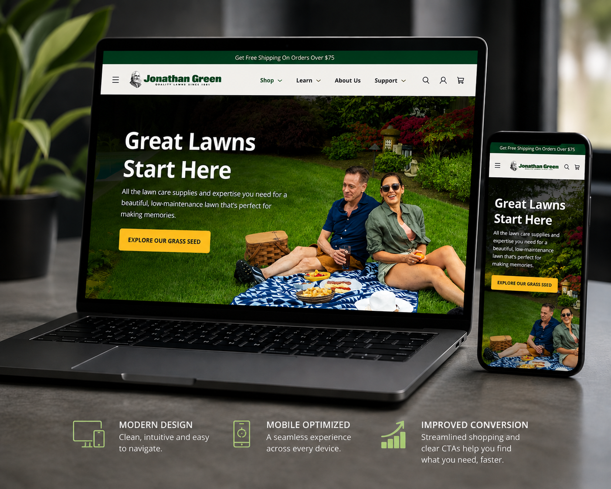
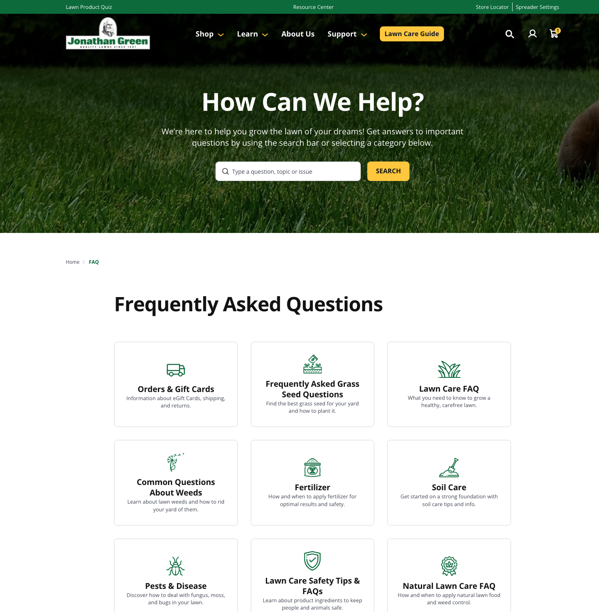
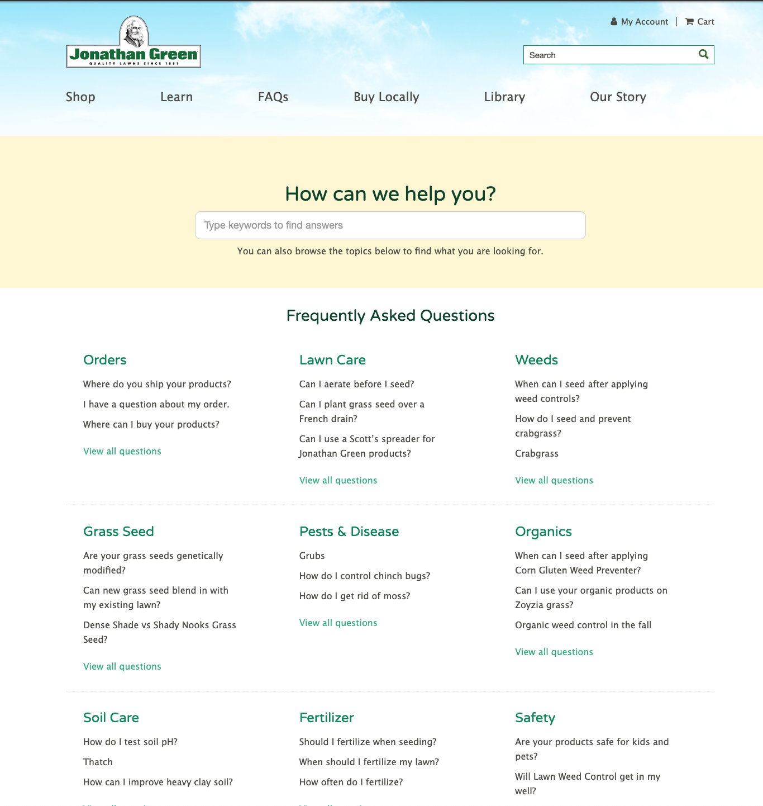
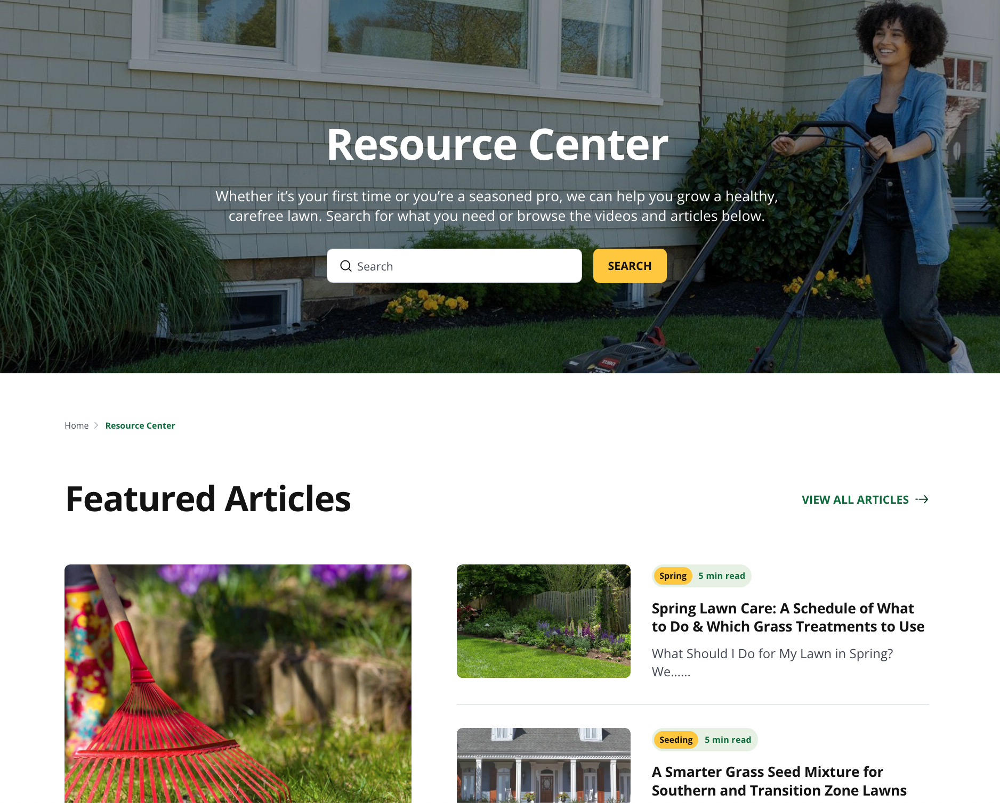
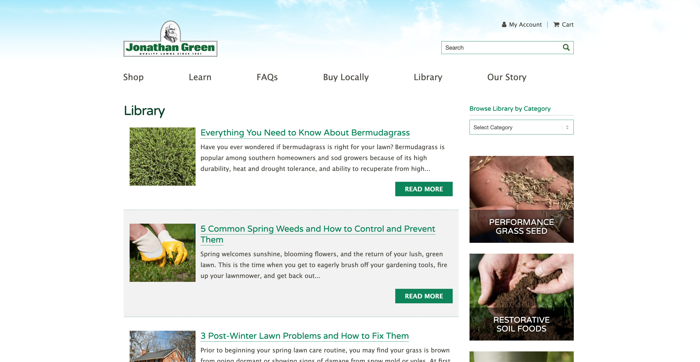

I rebuilt a DTC storefront from $10K to $2.5M.

Jonathan Green makes lawn-care products people swear by. The website didn't do them justice. Strong marketing poured traffic into a storefront that hid the products, leaked sales at checkout, and spoke to only half its buyers.
I had already launched the brand's e-commerce on WooCommerce, so I led the full rebuild end to end: UX, SEO migration and URL re-architecture, merchandising, and brand. I redesigned every page around how homeowners, retailers, and turf pros actually shop.
- Brand Ideation
- SEO Migration & URL Architecture
- Content Rewrite
- Site Architecture & Navigation
- Design & UX
- Conversion Optimization
- Quality Assurance
- Server Upgrade & Analytics (GTM / GA4)
Same brand. A completely different storefront.
Every problem with the old site, lined up against exactly what I replaced it with.
Great marketing, a storefront that couldn't convert

Products buried on the homepage
Hard-won traffic hit a homepage that hid categories and bestsellers, with nothing pointing shoppers toward the right buy.
No way to find the right product
Category pages had no filtering and resources sat buried, so shoppers couldn't match a product to their lawn.
A checkout that lost the sale
Too much friction between add-to-cart and a finished order quietly cost conversions on traffic I'd worked hard to earn.
A storefront built around how people shop

A homepage that sells
I rebuilt it to lead with the brand and surface popular products, steering shoppers straight to the right pick.
Filters for every lawn
Category pages now filter by sun & shade, region, lawn size, and weight, with every size and price shown up front.
A checkout that converts
A streamlined checkout and slide-out cart keep what shoppers added in view, from first click to confirmation.
I grew the DTC storefront from $10K to $2.5M, with net sales up 45% in a single year.
See the difference between the old and new designs.
Drag the handle on any comparison to slide between the old design and what's live today.
Answers people can actually find
I turned dense text columns into a searchable, categorized help center customers can navigate in seconds.


A real resource library
I moved lawn-care guidance out of buried pages into a searchable Resource Center of guides and articles.


A product page built to convert
I redesigned the mobile product page around how people decide, leading with key benefits, sizes, and pricing, and merchandising the right add-ons so shoppers can buy with confidence.
A quiz that finds the right product
I built a Lawn Product Quiz that recommends the right Jonathan Green products from each customer's situation, like their region, hours of sunlight, and whether they want an organic or chemical solution.
Education built into the site
I gave scattered how-to content a home: a Lawn Care Academy with an organized video series shoppers learn from.